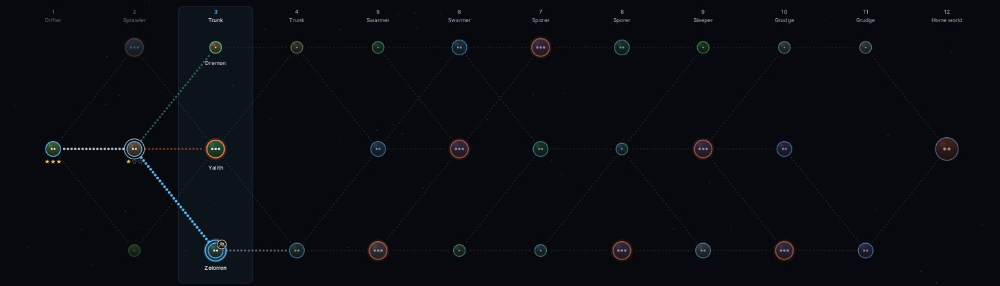

<title>Star map route options</title>
<meta name="claude:viewport-fit-sides" content="cover">
<link rel="stylesheet" href="https://fonts.googleapis.com/css2?family=Inter:wght@400;500;600&family=Space+Grotesk:wght@600&display=swap">
<style>
/* One column: today's route, then three mock-ups drawn from the same run, each one you can click. Dark like the game's star map. */
:root{--bg:#07090e;--panel:#0d1118;--fg:#e6e9ee;--muted:#8d96a3;--line:#222a35;--gold:#f0a63f;
--safe:#5cc07a;--fair:#58aef5;--hard:#f0703c;color-scheme:dark;
--body:Inter,system-ui,sans-serif;--head:"Space Grotesk",Inter,system-ui,sans-serif}
html,body{background:var(--bg);color:var(--fg)}
body{font-family:var(--body);line-height:1.5}
main{max-width:1180px;margin:0 auto;padding-block:28px 56px;padding-left:max(16px,env(safe-area-inset-left,0px));padding-right:max(16px,env(safe-area-inset-right,0px));display:grid;gap:26px}
h1{font-family:var(--head);font-size:1.7rem;margin:0;text-wrap:balance}
h2{font-family:var(--head);font-size:1.2rem;margin:0;text-wrap:balance}
p{margin:0;max-width:72ch}
.lede{color:var(--muted)}
.opt{display:grid;gap:10px;padding:16px;border:1px solid var(--line);border-radius:10px;background:var(--panel);min-width:0}
.tag{font-size:.78rem;letter-spacing:.06em;text-transform:uppercase;color:var(--gold);font-weight:600}
.rec{color:#0b0d12;background:var(--gold);border-radius:4px;padding:1px 7px;margin-left:8px;letter-spacing:.04em}
.wrap{overflow-x:auto;border-radius:6px;border:1px solid var(--line);background:#07090e}
svg{display:block;width:100%;min-width:640px;height:auto}
svg .hit{cursor:pointer}
img{width:100%;display:block;border-radius:6px;border:1px solid var(--line)}
ul{margin:0;padding-left:1.2em;color:var(--muted);max-width:72ch}
li{margin:2px 0}
.key{display:flex;flex-wrap:wrap;gap:14px;color:var(--muted);font-size:.88rem}
.key span::before{content:"";display:inline-block;width:10px;height:10px;border-radius:50%;margin-right:6px;vertical-align:-1px;background:var(--c)}
@media (prefers-reduced-motion: reduce){svg *{animation:none!important}}
</style>
<main>
<header style="display:grid;gap:8px">
<h1>The star map's route: three ways to make it a path</h1>
<p class="lede">The same run in each picture: planets 1 and 2 won, choosing planet 3 of 12 (Safe, Hard, or Fair with the rescue). The mock-ups are clickable: click one of the three lit planets to pick it and see where it leads. Only the route across the top changes; the cards under it stay.</p>
<div class="key"><span style="--c:var(--safe)">Safe</span><span style="--c:var(--fair)">Fair</span><span style="--c:var(--hard)">Hard</span></div>
</header>

<section class="opt">
<span class="tag">Today</span>
<h2>An even lattice</h2>

<ul>
<li>Every planet sits on one of three straight rows, and every row joins its neighbours the same way, so the map reads as a chart or a table, not a route.</li>
<li>The way you came and the ways you can go are thin dotted lines, the same kind of line as the rest.</li>
<li>The planets are small dots of the same size with pips inside, so they read as buttons.</li>
<li>Nothing marks where you are; the column band says "this step", not "you".</li>
</ul>
</section>

<section class="opt">
<span class="tag">Option A<span class="rec">Recommended</span></span>
<h2>A branching trail</h2>
<div class="wrap"><svg id="a" viewBox="0 0 1180 400" role="img" aria-label="Option A: a branching trail of planets"></svg></div>
<ul>
<li>The planets sit loosely along their lanes, and the lanes curve between them, so it reads as a map of places.</li>
<li>Your ship sits on the planet you just freed. The way you came is one bright solid trail, the three ways on are thick arrows in their difficulty's colour, and the planet you pick lights its ways on.</li>
<li>Planets are spheres in their world's colour, sized by difficulty; the far future fades step by step toward the home world.</li>
<li>Drawn only: the layout comes from the run's lanes, with a fixed jitter per planet.</li>
</ul>
</section>

<section class="opt">
<span class="tag">Option B</span>
<h2>Fog ahead</h2>
<div class="wrap"><svg id="b" viewBox="0 0 1180 400" role="img" aria-label="Option B: the next steps clear, the rest in fog"></svg></div>
<ul>
<li>Today's straight rows, but only the next three steps are drawn in full. Past them, planets are dim unknowns until you get closer; the home world shows at the end.</li>
<li>The route taken and the ways on are solid, as in A.</li>
<li>This hides the late planets. That is a design change (you could no longer plan the whole run), not just a look.</li>
</ul>
</section>

<section class="opt">
<span class="tag">Option C</span>
<h2>Today, sharpened</h2>
<div class="wrap"><svg id="c" viewBox="0 0 1180 400" role="img" aria-label="Option C: today's layout with the route made bold"></svg></div>
<ul>
<li>Today's layout and column heads, with the lattice faded to a whisper. The route taken is a solid bright line, the ways on are solid in their colours, and a ship marks where you are.</li>
<li>The smallest change, but the rows and columns still read as a grid.</li>
</ul>
</section>

<section class="opt">
<span class="tag">What it costs</span>
<p class="lede">All three are drawn in the star map's own code (<code>stars.rs</code>, the route map); nothing in the run changes. A is the most drawing work (curves, the ship, the fade), about one PR; B also needs a call on how far ahead you may see; C is an hour's change.</p>
</section>
</main>
<script>
// One made-up run shaped like the game's: 12 steps, three lanes from step 2 to 11, the home world last.
const N=12, BIOMES=["#6d9a4f","#c9a35b","#7d8f45","#b3735a","#4f8a6f","#8a8f99","#6c7aa0","#8a5a8f"];
function rnd(seed){let z=seed*2654435761>>>0;return()=>{z^=z<<13;z>>>=0;z^=z>>17;z^=z<<5;z>>>=0;return (z%10000)/10000}}
const R=rnd(7);
const steps=[];
for(let i=0;i<N;i++){
  const lanes=(i===0||i===N-1)?[0]:[-1,0,1];
  steps.push(lanes.map((l,j)=>({i,l,k:j,pips:i===N-1?3:(i===2?[1,3,2][j]:1+Math.floor(R()*3)),biome:BIOMES[Math.floor(R()*BIOMES.length)],jx:(R()-.5),jy:(R()-.5),rescue:i===2&&j===2,to:[]})));
}
// Links: each planet to the same lane ahead and to one neighbour lane, as the game's map does.
for(let i=0;i<N-1;i++){
  for(const a of steps[i]){
    for(const b of steps[i+1]){
      if(steps[i+1].length===1||steps[i].length===1){a.to.push(b);continue}
      if(b.l===a.l||(b.l===a.l+((a.k+i)%2?1:-1))||(i===1&&a.k===1))a.to.push(b);
    }
  }
}
const taken=[steps[0][0],steps[1][1]]; // planets 1 and 2 won, middle lane
const AT=2; // choosing step 3 (index 2)
const COL={1:"#5cc07a",2:"#58aef5",3:"#f0703c"};
const NS="http://www.w3.org/2000/svg";
function el(t,a,p){const e=document.createElementNS(NS,t);for(const k in a)e.setAttribute(k,a[k]);p&&p.appendChild(e);return e}

function draw(id,mode,pickInit){
  const svg=document.getElementById(id);let pick=pickInit;
  const W=1180,H=400,x0=60,col=(W-120)/(N-1),top=mode==="c"?70:40,bot=H-40;
  const pos=n=>{
    let x=x0+col*n.i,y=(top+bot)/2+n.l*(bot-top)*0.36;
    if(mode==="a"){x+=n.jx*col*(n.i<=AT?0.12:0.3);y+=n.jy*(bot-top)*0.16+(n.i%2?10:-10)*(n.l===0?1:0)}
    return [x,y]};
  const rad=n=>(n.i===N-1?26:(mode==="c"?10:9)+n.pips*(mode==="c"?2:3.2));
  function render(){
    svg.textContent="";
    const defs=el("defs",{},svg);
    // Sphere shading, one gradient per biome colour.
    BIOMES.concat(["#b07a52"]).forEach((c,ix)=>{const g=el("radialGradient",{id:id+"g"+ix,cx:"35%",cy:"32%",r:"75%"},defs);
      el("stop",{offset:"0%","stop-color":"#fff","stop-opacity":"0.55"},g);el("stop",{offset:"28%","stop-color":c},g);el("stop",{offset:"100%","stop-color":"#05070b"},g)});
    ["#e8edf4","#5cc07a","#58aef5","#f0703c"].forEach((c,ix)=>{const m=el("marker",{id:id+"m"+ix,viewBox:"0 0 10 10",refX:"8",refY:"5",markerWidth:"4.2",markerHeight:"4.2",orient:"auto-start-reverse"},defs);el("path",{d:"M0,0 L10,5 L0,10 z",fill:c},m)});
    // Fog for B: steps beyond AT+3 hidden.
    const fogged=n=>mode==="b"&&n.i>AT+2&&n.i<N-1;
    const fade=n=>{if(mode!=="a")return 1;const d=n.i-AT;return d<=1?1:Math.max(0.28,Math.pow(0.8,d-1))};
    // Column heads in C.
    if(mode==="c"){const names=["Drifter","Sprawler","Trunk","Trunk","Swarmer","Swarmer","Sporer","Sporer","Sleeper","Grudge","Grudge","Home world"];
      for(let i=0;i<N;i++){const x=x0+col*i;el("text",{x,y:22,"text-anchor":"middle",fill:i===AT?"#f0a63f":"#8d96a3","font-size":12,"font-weight":600,"font-family":"Inter"},svg).textContent=i+1;
        el("text",{x,y:38,"text-anchor":"middle",fill:i===AT?"#e6e9ee":"#8d96a3","font-size":12,"font-family":"Inter"},svg).textContent=names[i]}}
    if(mode==="b"){const fx=x0+col*(AT+2.5);
      const g=el("linearGradient",{id:id+"fog",x1:"0",x2:"1"},defs);el("stop",{offset:"0","stop-color":"#07090e","stop-opacity":"0"},g);el("stop",{offset:"1","stop-color":"#07090e","stop-opacity":"0.0"},g);
      el("text",{x:(fx+x0+col*(N-1))/2,y:30,"text-anchor":"middle",fill:"#5d6673","font-size":13,"font-family":"Inter","font-style":"italic"},svg).textContent="Uncharted until you get closer"}
    // Links.
    const links=[];
    for(let i=0;i<N-1;i++)for(const a of steps[i])for(const b of a.to){
      let kind=0;
      if(taken.includes(a)&&taken.includes(b))kind=3;
      else if(a===taken[taken.length-1]&&b.i===AT)kind=b.k===pick?5:4;
      else if(b.i===AT+1&&a.i===AT&&a.k===pick)kind=2;
      links.push({a,b,kind});
    }
    links.sort((p,q)=>p.kind-q.kind);
    for(const {a,b,kind} of links){
      if(fogged(a)||fogged(b)){if(mode==="b")continue}
      const [ax,ay]=pos(a),[bx,by]=pos(b);const ra=rad(a)+5,rb=rad(b)+(kind>=4?9:5);
      const dx=bx-ax,dy=by-ay,L=Math.hypot(dx,dy);const sx=ax+dx/L*ra,sy=ay+dy/L*ra,ex=bx-dx/L*rb,ey=by-dy/L*rb;
      let d;
      if(mode==="a"){const mx=(sx+ex)/2;d=`M${sx},${sy} C${mx},${sy} ${mx},${ey} ${ex},${ey}`}else d=`M${sx},${sy} L${ex},${ey}`;
      let st;
      if(kind===3)st={stroke:"#e8edf4","stroke-width":mode==="c"?3.5:5,opacity:.95};
      else if(kind===5)st={stroke:COL[b.pips],"stroke-width":5,"marker-end":`url(#${id}m${b.pips})`};
      else if(kind===4)st={stroke:COL[b.pips],"stroke-width":3.2,opacity:.7,"marker-end":`url(#${id}m${b.pips})`};
      else if(kind===2)st={stroke:"#c8d4e4","stroke-width":2.2,opacity:.6,"stroke-dasharray":"2 6","stroke-linecap":"round"};
      else st={stroke:"#96a0b4","stroke-width":mode==="c"?1.2:1.6,opacity:mode==="c"?.09:(mode==="a"?.16*Math.min(fade(a),fade(b))/0.5:.13),"stroke-dasharray":mode==="c"?"2 6":"none"};
      if(kind===3&&mode!=="c")el("path",Object.assign({d,fill:"none",stroke:"#e8edf4","stroke-width":14,opacity:.08,"stroke-linecap":"round"}),svg);
      el("path",Object.assign({d,fill:"none","stroke-linecap":"round"},st),svg);
    }
    // Planets.
    for(const st of steps)for(const n of st){
      const [x,y]=pos(n);const r=rad(n);const now=n.i===AT;const past=n.i<AT;const won=taken.includes(n);
      if(fogged(n)){el("circle",{cx:x,cy:y,r:7,fill:"#141a23",stroke:"#2a3340","stroke-width":1.2},svg);el("text",{x,y:y+4,"text-anchor":"middle",fill:"#4b5563","font-size":10,"font-family":"Inter","font-weight":600},svg).textContent="?";continue}
      const op=past&&!won?.2:(now||won?1:(mode==="c"?.55:fade(n)*0.9));
      const g=el("g",{opacity:op},svg);
      if(now&&n.k===pick){el("circle",{cx:x,cy:y,r:r+10,fill:COL[n.pips],opacity:.18},g);el("circle",{cx:x,cy:y,r:r+7,fill:"none",stroke:COL[n.pips],"stroke-width":2.2},g)}
      const bi=BIOMES.indexOf(n.biome);
      el("circle",{cx:x,cy:y,r,fill:`url(#${id}g${n.i===N-1?BIOMES.length:bi})`},g);
      el("circle",{cx:x,cy:y,r,fill:"none",stroke:COL[n.pips],"stroke-width":mode==="c"?1.6:1.3,opacity:mode==="a"?.7:.9},g);
      if(n.i===N-1){el("circle",{cx:x,cy:y,r:r+5,fill:"none",stroke:"#f0a63f","stroke-width":1.4,opacity:.7,"stroke-dasharray":"3 4"},g);
        el("text",{x,y:y+r+18,"text-anchor":"middle",fill:"#f0a63f","font-size":12,"font-family":"Inter","font-weight":600},g).textContent="Home world"}
      if(won){for(let s=0;s<3;s++){el("text",{x:x-12+s*12,y:y+r+16,"text-anchor":"middle",fill:s<(n.i===0?3:1)?"#f0c040":"#3a4250","font-size":12},g).textContent="★"}}
      if(now){const names=["Dremon","Yalith","Zolorren"];const lbl=["Safe","Hard","Fair"];
        el("text",{x,y:y+r+(n.k===pick?24:19),"text-anchor":"middle",fill:n.k===pick?"#e6e9ee":"#aab3bf","font-size":13,"font-weight":600,"font-family":"Inter"},g).textContent=names[n.k];
        el("text",{x,y:y-r-(n.k===pick?14:9),"text-anchor":"middle",fill:COL[n.pips],"font-size":11,"font-weight":600,"letter-spacing":".06em","font-family":"Inter"},g).textContent=lbl[n.k].toUpperCase();
        const h=el("circle",{cx:x,cy:y,r:r+14,fill:"transparent",class:"hit"},svg);h.addEventListener("click",()=>{pick=n.k;render()});}
      if(n.rescue){el("circle",{cx:x+r*.8,cy:y-r*.8,r:6,fill:"#f3e6c4"},g)}
    }
    // The ship on the planet just won (A and C), pointing at the pick.
    if(mode!=="b"||true){const at=taken[taken.length-1];const [x,y]=pos(at);const tgt=steps[AT].find(n=>n.k===pick);const [tx,ty]=pos(tgt);
      const sy=y-rad(at)-16;const ang=Math.atan2(ty-sy,tx-x)*180/Math.PI;const g=el("g",{transform:`translate(${x},${sy}) rotate(${ang})`},svg);
      el("path",{d:"M12,0 L-7,-8 L-3,0 L-7,8 Z",fill:"#f0a63f",stroke:"#07090e","stroke-width":1.5},g);
      el("text",{x,y:y-rad(at)-30,"text-anchor":"middle",fill:"#f0a63f","font-size":11,"font-weight":600,"letter-spacing":".06em","font-family":"Inter"},svg).textContent="YOU"}
  }
  render();
}
draw("a","a",2);draw("b","b",2);draw("c","c",2);
</script>
